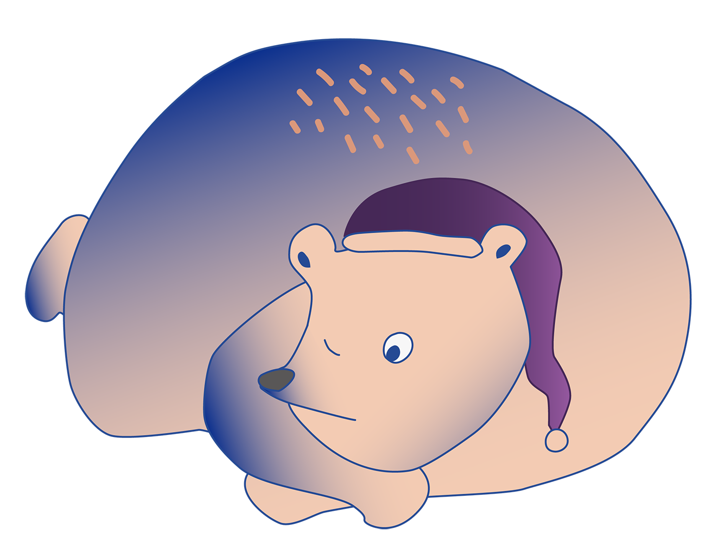
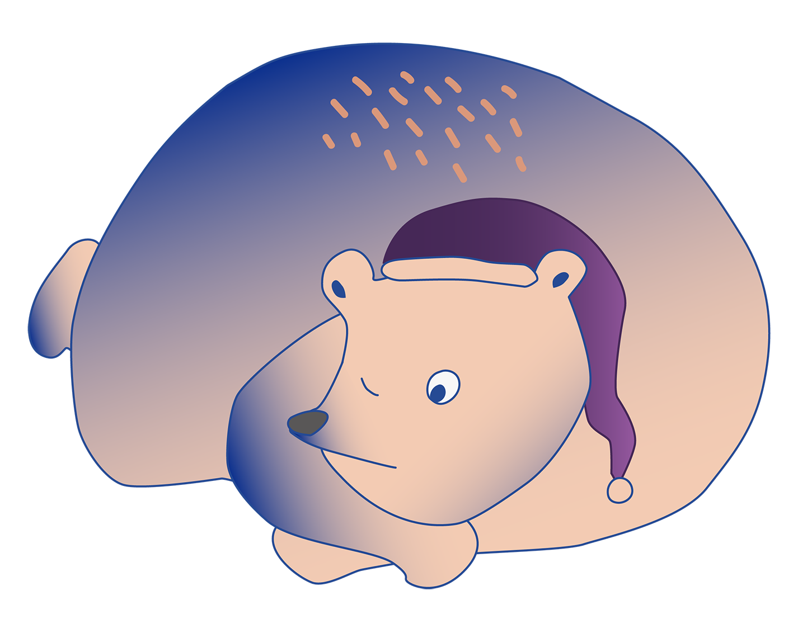

關於我們
「嘿，我們來自臺大生傳系」
臺大生傳系，全名生物產業傳播暨發展學系，前身是農業推廣學系，名稱很長、歷史超過一甲子，作為臺大唯一的傳播相關學系，我們以行銷、傳播加上農業的跨領域結合作為招牌，整合社會發展理論並應用於農業生產、人類生活與社會永續發展等多元面向。
「嘿，我們來自臺大生傳系」
主流消費文化主宰下，絢爛的感官體驗帶著我們失速，感官暴露在過多、過快的資訊底下，所有刺激流於表層的淺嚐即止，使我們正與真實世界脫軌。因此，這一次臺大生傳系試圖透過五感的重新組裝，讓你能對這個世界有更深入的理解，把真實且細膩的感動帶回你身邊。
「嘿，我們來自臺大生傳系」
我們立身於土地，從農業出發，跨越畛域的界線，
用不一樣的視角看見被忽略的細節。